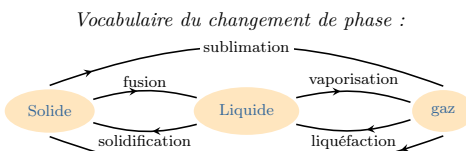
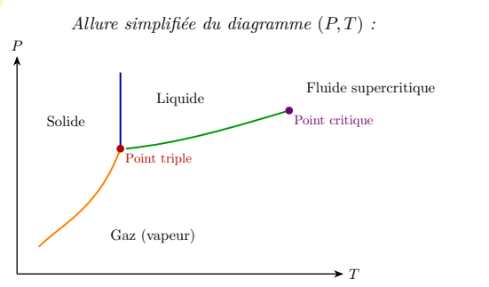
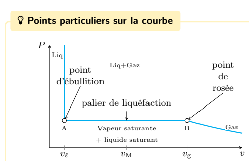
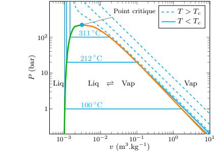
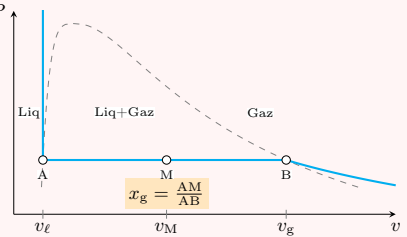

******
纯物质的多相平衡 Équilibre d’un corps pur sous plusieurs phases
来源：PDF第 1 页
I. 纯物质多相的一般概念
纯物质、相与相变
若一种物质只由一种化学组分构成，就称为纯物质（corps pur）。
相（phase）（或状态）是一个均匀系统，也可以是非均匀系统中的一个均匀子系统。在同一个相内，强度量处处均匀。
物质从一个相变到另一个相时，称为相变（changement de phase）（或状态变化）。

图示解读（PDF第 1 页）：固体和液体之间有熔化与凝固；液体和气体之间有汽化与液化；固体与气体之间有升华与凝华。
影响相变的参数
纯物质的相变受温度和压力影响。系统处于单一相时，称为双变系（bivariant）：压力 $P$ 和温度 $T$ 可以独立选取。
两相共存时，$P$ 与 $T$ 不能再独立选取，系统称为单变系（monovariant）。
II. 压力–温度相图（$P,T$）
相图及相关术语

图示解读（PDF第 1 页）：相图用 $T$ 作横轴、$P$ 作纵轴；图中曲线把固体、液体、气体（蒸气）和超临界流体的区域分开。三相点是三条平衡曲线的交点，液体–蒸气曲线在临界点结束。
对于每种纯物质，都可以通过实验建立相图，显示在不同状态参数下物质所处的相。常用的是 $P$-$T$ 相图：横轴为温度 $T$，纵轴为压力 $P$。
两种不同相只会在分隔其稳定区域的平衡曲线上共存。因此压力和温度满足关系 $$ P=P_{\mathrm{eq}}(T), $$ 其中 $P_{\mathrm{eq}}(T)$ 称为平衡压力；相图中的这条曲线称为平衡曲线。
固–液平衡曲线通常斜率为正；水是例外，其斜率为负。
三相点与临界点
- 三相点（point triple） $(P_T,T_T)$ 是液体、固体和气体唯一能够共存的点，也是三条曲线的交点。
- 临界点（point critique）是液体–蒸气平衡曲线的终点。超过该点后，不再观察到液体与蒸气之间的相变。
- 超过临界点时，物质处于超临界流体（fluide supercritique）状态，其性质介于气体和液体之间，但它仍是单一相。
来源：PDF第 2 页
III. 液体–蒸气平衡
液体–蒸气平衡的术语
- 只有气相存在时，称为干蒸气（vapeur sèche）（或干气体）。
- 气相与液相处于平衡时，气相称为饱和蒸气（vapeur saturante），液相称为饱和液体（liquide saturant）。
- 在温度 $T$ 下，与该纯物质凝聚相平衡的蒸气压力，称为饱和蒸气压（pression de vapeur saturante），记为 $P_{\mathrm{sat}}(T)$。对应曲线称为饱和曲线。
Clapeyron 图
Clapeyron 图（diagramme de Clapeyron）表示压力 $P$ 随体积变化。横轴可以采用摩尔体积 $$ V_m=\frac{V}{n}, $$ 也可以采用质量比容 $$ v=\frac{V}{m}. $$
曲线上的特殊点

图示解读（PDF第 2 页）：水平的液化平台上，端点 A 是沸点，端点 B 是露点；平台中间液体与蒸气共存，压力保持不变。
- 露点（point de rosée）是出现第一滴液体的点。
- 沸点（point d’ébullition）是出现第一个蒸气泡的点。
- 在液化平台上压力保持不变，但液体与气体的比例会变化。
推导要求：会定性解释液–汽相变过程中 Clapeyron 图中的等温线形状。
Andrews 等温线与饱和曲线
对不同温度 $T$ 绘制多条等温线，就得到Andrews 等温线（isothermes d’Andrews）。
饱和曲线（courbe de saturation）由液化平台两端点组成，分成两部分：
- 露点线（courbe de rosée）由所有露点组成，位于右侧。
- 沸点线（courbe d’ébullition）由所有沸点组成，位于左侧。

图示解读（PDF第 2 页）：图中给出水在 $100^\circ\mathrm C$、$212^\circ\mathrm C$、$311^\circ\mathrm C$ 时的等温线，并标出临界点；图示还区分 $T
来源：PDF第 3 页
杠杆定则
杠杆定则
已知液–汽平衡系统的质量 $m$ 和质量比容 $v$，可利用杠杆定则（règle des moments）求液体与蒸气的质量 $m_l$、$m_g$： $$ m_l=m\frac{v_g-v}{v_g-v_l}, \qquad m_g=m\frac{v-v_l}{v_g-v_l}. $$ 其中饱和液体和饱和蒸气的质量比容 $v_l$、$v_g$ 从 Clapeyron 图上读取。
还可定义蒸气质量分数 $$ x_g=\frac{m_g}{m}, $$ 以及液体质量分数 $$ x_l=\frac{m_l}{m}. $$

图示解读（PDF第 3 页）：混合状态点 $M$ 位于饱和液体端点 $A$ 与饱和蒸气端点 $B$ 之间；蒸气质量分数满足 $x_g=AM/AB$。
推导要求：会从 Clapeyron 图读取饱和液体与饱和蒸气的质量比容，并会推导杠杆定则。
IV. 相变的热力学
相变与热力学第一、第二定律
第一定律（回顾）
物质从相 1 变到相 2 时，
$$
\Delta H=m\Delta h_{1\to2},
$$
其中 $\Delta h_{1\to2}$ 是相 1 到相 2 的单位质量相变焓（也称潜热）。
第二定律
相变伴随着熵变。若相变在温度 $T$ 和压力恒定时从相 1 进行到相 2，则
$$
\Delta S=m\frac{\Delta h_{1\to2}}{T}.
$$
向较无序相转变时（熔化、汽化），熵变为正；向较有序相转变时（凝固、凝结），熵变为负。
章节串联
$P$-$T$ 相图说明不同相何时能够共存；$P$-$v$ 的 Clapeyron 图则帮助读取饱和液体与蒸气的端点数据。杠杆定则用这些端点求两相各自的质量，最后再用焓与熵变化描述相变的能量和方向。
重要术语概念汇总表
| 法语术语 | 中文术语 | 简要含义 |
|---|---|---|
| corps pur | 纯物质 | 只含一种化学组分的物质 |
| phase | 相 | 均匀系统或非均匀系统中的均匀子系统 |
| monovariant / bivariant | 单变系 / 双变系 | 两相共存时 $P,T$ 受约束；单相时可独立变化 |
| point triple | 三相点 | 固、液、气三相共存的交点 |
| point critique | 临界点 | 液体–蒸气平衡曲线的终点 |
| pression de vapeur saturante | 饱和蒸气压 | 与凝聚相平衡的蒸气压力 |
| point de rosée / d’ébullition | 露点 / 沸点 | 第一滴液体 / 第一个蒸气泡出现的点 |
| diagramme de Clapeyron | Clapeyron 图 | 压力随摩尔体积或质量比容变化的图 |
| règle des moments | 杠杆定则 | 由混合物比容计算两相质量比例 |
| enthalpie massique de changement d’état | 单位质量相变焓 | 单位质量物质发生相变时的焓变 |
标记说明：灯泡表示需掌握的定义；星号表示需掌握的结果；铅笔表示需掌握的推导。
章末测验
每题选择后单独提交；提交后显示正确答案与解析。
基础
中文：按讲义对相平衡的自由度描述，单相平衡态属于哪一类？
Français：Selon la description des degrés de liberté de la fiche, de quel type est un état d’équilibre monophasé ?
中文解析：讲义说明单相平衡态是双变的，可由两个独立强度变量描述。
Français：La fiche indique qu’un état d’équilibre monophasé est bivariant et peut être décrit par deux variables intensives indépendantes.
中文：纯物质的三相点对应哪种共存状态？
Français：À quel état de coexistence correspond le point triple d’un corps pur ?
中文解析：三相点是固相、液相和气相同时共存的状态。
Français：Le point triple correspond à la coexistence simultanée des phases solide, liquide et gazeuse.
中文：液体与蒸气处于平衡时，饱和压力通常记为什么？
Français：Comment note-t-on généralement la pression de saturation lorsque le liquide et la vapeur sont à l’équilibre ?
中文解析：液–汽平衡时，饱和压力由温度确定，记为 $P_{\mathrm{sat}}(T)$。
Français：À l’équilibre liquide-vapeur, la pression de saturation est déterminée par la température et notée $P_{\mathrm{sat}}(T)$.
中档
中文：在液–汽两相区，若比容为 $v$，饱和液体和饱和蒸气比容分别为 $v_l$、$v_g$，蒸气质量分数 $x_g$ 的杠杆定则公式是什么？
Français：Dans la zone liquide-vapeur, avec le volume massique $v$ et les volumes massiques saturés $v_l$ et $v_g$, quelle formule donne la fraction massique de vapeur $x_g$ selon la règle du levier ?
中文解析：杠杆定则给出 $x_g=(v-v_l)/(v_g-v_l)$，表示总体比容在饱和液体与饱和蒸气端点间的位置比例。
Français：La règle du levier donne $x_g=(v-v_l)/(v_g-v_l)$ ; elle exprime la position du volume massique global entre les états saturés liquide et vapeur.
中文：在恒压加热的汽化过程中，气泡开始出现的温度称为什么？
Français：Lors d’une vaporisation par chauffage à pression constante, comment s’appelle la température à laquelle apparaît la première bulle de vapeur ?
中文解析：讲义把恒压加热时第一泡蒸气出现的温度称为沸点；露点对应第一滴液体出现。
Français：La fiche appelle point d’ébullition la température d’apparition de la première bulle de vapeur lors d’un chauffage à pression constante ; le point de rosée correspond à la première goutte liquide.
中文：对同一物质的相变，熔化/汽化与凝固/液化的熵变符号通常分别如何？
Français：Pour les changements de phase d’un même corps, quels sont généralement les signes des variations d’entropie lors de la fusion/vaporisation et de la solidification/condensation ?
中文解析：熔化和汽化时熵变为正；凝固和液化时熵变为负。
Français：La variation d’entropie est positive lors de la fusion et de la vaporisation, et négative lors de la solidification et de la condensation.